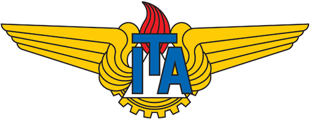

<!DOCTYPE html>
<html lang="pt-BR">
<head>
    <meta charset="UTF-8">
    <meta name="viewport" content="width=device-width, initial-scale=1.0">
    <title>Questionário do ITA disciplina Matemática 2021</title>
    <link rel="stylesheet" href="style.css">
    <style>
        * {
            box-sizing: border-box;
            margin: 0;
            padding: 0;
        }

        body {
            font-family: 'Comic Sans MS', cursive;
            background-color: blue;
            display: flex;
            justify-content: center;
            align-items: center;
            flex-direction: column;
            height: 100vh;
        }

        .container {
            width: 70%;
            padding: 10px;
            background-color: #98fb98;
            border-radius: 16px;
            box-shadow: 0 4px 8px rgba(0, 0, 0, 0.2);
            text-align: center;
            font-size: 16px;
        }

        h1 {
            margin-bottom: 20px;
        }

        #question-container {
            margin-bottom: 20px;
        }

        label {
            font-size: 20px; /* Aumenta o tamanho das respostas */
            margin: 1px 0; /* Espaçamento entre as respostas */
            display: block; /* Coloca cada resposta em uma linha separada */
        }

        button {
            padding: 15px 30px;
            font-size: 24px;
            cursor: pointer;
            color: blue;
            font-family: 'Papyrus', cursive;
            border-radius: 16px;
            margin-top: 20px;
        }
    </style>
</head>

<body>
    <div style="text-align: center;">
        
       <h1 style="color: yellow;"> Questionário do ITA disciplina Matemática 2021</h1>
    </div>

    <div class="container">
        <div id="question-container"></div>
        <button id="next-button" onclick="nextQuestion()">Próxima Questão</button>
        <button id="restart-button" onclick="restartQuiz()" style="display: none;">Refazer Questionário</button>
    </div>

    <script>
        const questions = [

            {
                question: " Assinale a alternativa que apresenta uma metáfora. ",
                answers: ["A) Ela é uma flor no jardim. ", "B) Ele corre como o vento. ", "C) O livro é mais interessante que o filme. ", "D) Ele falou com grande clareza. "],
                correct: 0
            },
            {
                question: " Qual figura de linguagem está presente na frase _O silêncio gritou na sala?_ ",
                answers: ["A) Metáfora ", "B) Ironia  ", "C) Personificação ", "D) Antítese "],
                correct: 2
            },
            {
                question: " Assinale a alternativa que apresenta uma comparação.",
                answers: ["A) A vida é uma jornada. ", "B) Ele é mais forte que o aço. ", "C) O vento soprava forte. ", "D) A esperança é um farol."],
                correct: 1
            },
            {
                question: " Qual figura de linguagem é utilizada na expressão _É um mar de lágrimas?_ ",
                answers: ["A) Anacoluto  ", "B) Hipérbole ", "C) Eufemismo ", "D) Metáfora "],
                correct: 3
            },
            {
                question: " Assinale a alternativa que apresenta uma antítese. ",
                answers: ["A) Ela cantou doce e suavemente. ", "B) O sol brilhava enquanto a chuva caía. ", "C) O dia estava ensolarado. ", "D) Ele era forte como um leão. "],
                correct: 1
            },
            {
                question: " Assinale a alternativa que apresenta uma ironia. ",
                answers: ["A) Que ótimo, mais um dia de chuva! ", "B) Ele é uma pessoa muito honesta. ", "C) A verdade sempre prevalece. ", "D) Ela canta muito bem."],
                correct: 0
            },
            {
                question: " Assinale a alternativa que apresenta uma metonímia. ",
                answers: ["A) Ela tem uma boca linda. ", "B) O rei tem um império vasto. ", "C) Ele deu a vida pelo país. ", "D) As mãos do trabalhador são fortes. "],
                correct: 2
            },
            {
                question: " Assinale a alternativa que apresenta uma hipérbole. ",
                answers: ["A) Ele falou por horas.  ", "B) Eu estou morrendo de fome. ", "C) Ele corre como o vento. ", "D) O livro é interessante. "],
                correct: 1
            },
            {
                question: " Qual figura de linguagem está presente na expressão _Eu vou morrer de rir_? ",
                answers: ["A) Eufemismo ", "B) Ironia ", "C) Personificação ", "D)Hipérbole "],
                correct: 3
            },
            {
                question: " Assinale a alternativa que apresenta uma antítese. ",
                answers: ["A) O calor do sol é insuportável. ", "B) Ela se encontrou com o amigo no parque. ", "C) A chuva não molhou a terra seca. ", "D) A paz e a guerra. "],
                correct: 3
            },
            {
                question: " Assinale a alternativa que apresenta uma elipse. ",
                answers: ["A) Vou ao cinema hoje, ela vai amanhã. ", "B) Ele não gosta de futebol, mas adora basquete. ", "C) O vento soprava forte durante a noite.", "D) As estrelas brilhavam no céu.  "],
                correct: 0
            },
            {
                question: " Assinale a alternativa que apresenta uma onomatopeia. ",
                answers: ["A) A campainha tocou. ", "B) O vento assobiou entre as árvores. ", "C) Ela se levantou rapidamente. ", "D) Ele gritou muito alto. "],
                correct: 1
            },
            {
                question: " Assinale a alternativa que apresenta uma perífrase.  ",
                answers: ["A) A cidade maravilhosa é cheia de encantos mil. ", "B) O cachorro latiu alto. ", "C) Ele me olhou com carinho. ", "D) O vento foi forte. "],
                correct: 0
            },
            {
                question: " Assinale a alternativa que apresenta uma anáfora. ",
                answers: ["A) Eu amo muito meu país. Amo muito minha cidade. ", "B) Ele passou no concurso. Ele está feliz. ", "C) O céu estava azul, o mar também. ", "D) Ela correu rápido e venceu a corrida."],
                correct: 0
            },
            {
                question: " Assinale a alternativa que apresenta uma polissíndeto. ",
                answers: ["A) Ele era bonito e simpático e gentil. ", "B) Ela corria e parava e olhava para trás.", "C) O vento e a chuva não paravam.", "D) Ele falava e gesticulava com entusiasmo."],
                correct: 1
            },
            {
                question: " Assinale a alternativa que apresenta uma antífrase. ",
                answers: ["A) Ele é um exemplo de virtude. ", "B) O filho da mãe fez a besteira. ", "C) O filho da mãe fez a besteira. ", "D) Eu odeio ficar aqui. "],
                correct: 2
            }

            // Adicione mais perguntas conforme necessário
        ];

        let currentQuestion = 0;
        let userAnswers = [];

        function shuffleQuestions() {
            for (let i = questions.length - 1; i > 0; i--) {
                const j = Math.floor(Math.random() * (i + 1));
                [questions[i], questions[j]] = [questions[j], questions[i]];
            }
        }

        function showQuestion() {
            const questionContainer = document.getElementById("question-container");
            const questionData = questions[currentQuestion];
            questionContainer.innerHTML = `
                <h2>${questionData.question}</h2>
                ${questionData.answers.map((answer, index) => `
                    <label>
                        <input type="radio" name="answer" value="${index}">
                        ${answer}
                    </label><br>
                `).join("")}
            `;
        }

        function nextQuestion() {
            const selectedAnswer = document.querySelector('input[name="answer"]:checked');
            if (selectedAnswer) {
                userAnswers.push(parseInt(selectedAnswer.value));
                currentQuestion++;
                if (currentQuestion < questions.length) {
                    showQuestion();
                } else {
                    showResults();
                }
            } else {
                alert("Por favor, selecione uma resposta.");
            }
        }

        function showResults() {
            let score = 0;
            const questionContainer = document.getElementById("question-container");
            let resultHtml = "<h2>Resultado Final</h2><table><tr><th>Questão</th><th>Resposta Correta</th><th>Sua Resposta</th></tr>";

            questions.forEach((q, index) => {
                const isCorrect = userAnswers[index] === q.correct;
                if (isCorrect) score++;
                resultHtml += `
                    <tr>
                        <td>${q.question}</td>
                        <td>${q.answers[q.correct]}</td>
                        <td>${q.answers[userAnswers[index]] || "Não respondida"}</td>
                    </tr>
                    <tr><td colspan="3"><hr></td></tr> <!-- Linha separadora entre respostas -->
                `;
            });

            resultHtml += `</table><p>Total de acertos: ${score}/${questions.length}</p>`;
            questionContainer.innerHTML = resultHtml;
            document.getElementById("next-button").style.display = "none";
            document.getElementById("restart-button").style.display = "inline-block";
        }

        function restartQuiz() {
            userAnswers = [];
            currentQuestion = 0;
            shuffleQuestions();
            showQuestion();
            document.getElementById("next-button").style.display = "inline-block";
            document.getElementById("restart-button").style.display = "none";
        }

        shuffleQuestions();
        showQuestion();
    </script>
</body>
</html>
